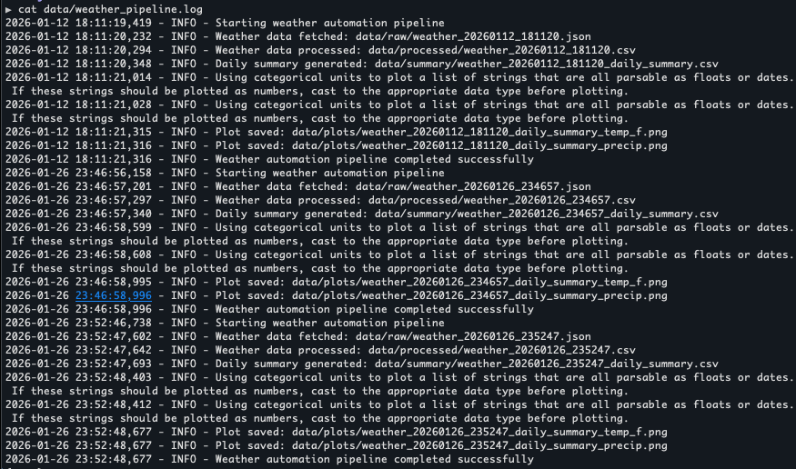
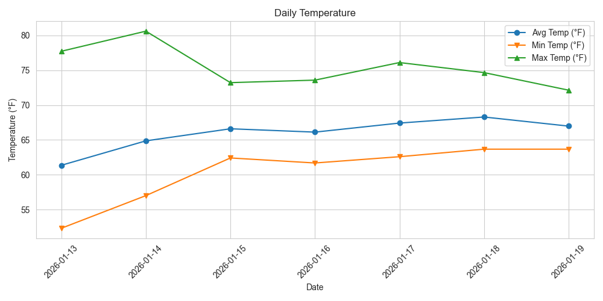

Project Overview
This project demonstrates an end-to-end data automation workflow: fetching real-world weather data from the Open-Meteo API, processing it into clean datasets, generating daily summaries, and producing visualizations. It showcases Python, Pandas, Matplotlib, and automation skills essential for data analysis roles.
Technologies Used
Python
Pandas
Matplotlib
Seaborn
API Integration
Data Pipeline
Key Features
- Automated Data Collection: Fetches hourly weather data using the Open-Meteo API
- Data Processing: Converts raw JSON into clean CSV files with validation
- Daily Summary Generation: Computes daily average, min, and max temperatures
- Visualization: Generates line plots for temperatures and bar plots for precipitation
- Logging: Tracks pipeline progress and errors for debugging
- Reproducibility: Stores raw JSON locally for data lineage
How It Works
- Fetch Data: Retrieves hourly weather data from Open-Meteo API
- Process Data: Cleans and validates timestamps, handles missing data
- Generate Summary: Calculates daily statistics (avg, min, max temps, total precipitation)
- Visualize: Creates temperature and precipitation plots saved as PNG files
- Log Progress: Records pipeline execution for monitoring and debugging
Installation & Usage
# Clone the repository
$ git clone https://github.com/Marlontino/Weather.git
$ cd Weather
# Create a virtual environment
$ python -m venv venv
$ source venv/bin/activate # On Windows: venv\Scripts\activate
# Install dependencies
$ pip install -r requirements.txt
# Run the full pipeline
$ python -m src.main
Pipeline Output
data/raw/weather_YYYYMMDD_HHMMSS.json → Raw hourly data
data/processed/weather_YYYYMMDD_HHMMSS.csv → Cleaned hourly CSV
data/summary/weather_..._daily_summary.csv → Daily summary stats
data/plots/weather_..._temp_f.png → Temperature plot (°F)
data/plots/weather_..._precip.png → Precipitation plot
Project Structure
- fetch_weather.py: Fetches weather data from Open-Meteo API
- process_weather.py: Processes raw JSON into cleaned CSV
- daily_summary.py: Generates daily summary statistics
- visualize_summary.py: Produces plots from daily summaries
- main.py: Orchestrates the full pipeline
Visualizations

Daily temperature trends visualization
Skills Demonstrated
- Python scripting and package organization
- API integration and JSON handling
- Data cleaning and time-series processing with Pandas
- Automated reporting and data visualization
- Logging and workflow orchestration
Project Highlights
- Data Engineering: Complete ETL pipeline from API to visualization
- Automation: Fully automated workflow with single command execution
- Best Practices: Logging, error handling, and reproducible data storage
- Portfolio Ready: Generates publication-quality plots for reporting
- Extensible: Designed for easy additions like anomaly detection or dashboards